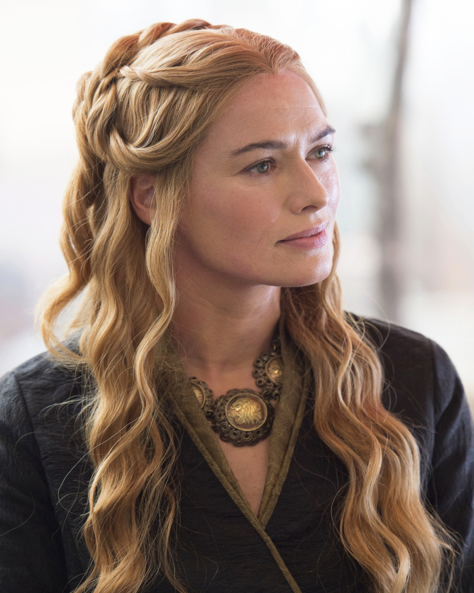
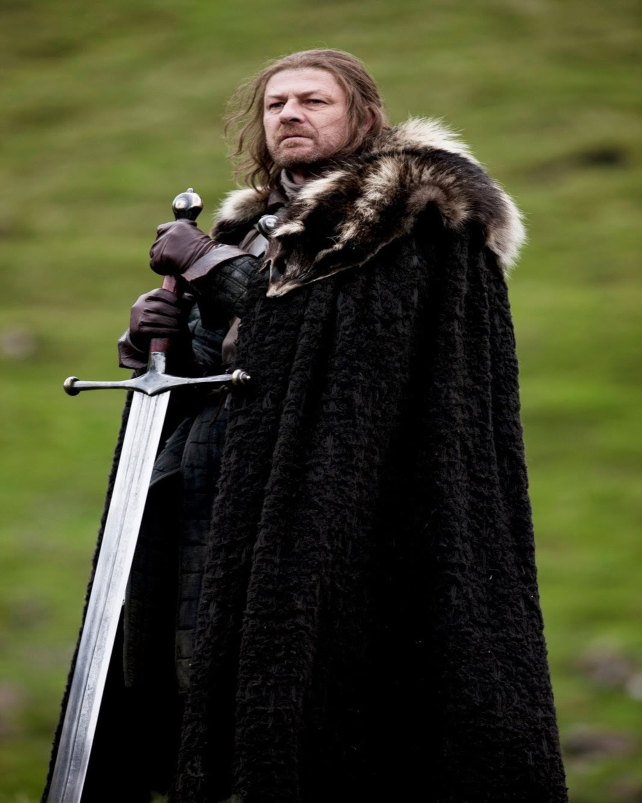
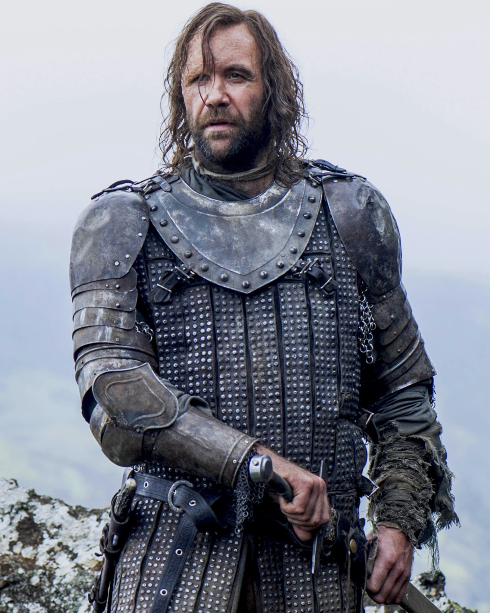

Here's a list of the main characters of the series! The character introductions are taken from the official wiki!
Jon Snow
Jon Snow is the bastard son of Eddard Stark, Lord of Winterfell.He has five half-siblings: Robb, Sansa, Arya, Bran, and Rickon Stark. Unaware of the identity of his mother, Jon was raised at Winterfell. At the age of fourteen, he joins the Night's Watch, where he earns the nickname Lord Snow. Jon is one of the major POV characters in A Song of Ice and Fire. In the television adaptation Game of Thrones, Jon is portrayed by Kit Harington.
Daenerys Targaryen
Princess Daenerys Targaryen, also known as Daenerys Stormborn, is one of the last confirmed members of House Targaryen, along with her older brother Viserys, who refers to her as Dany.She is the youngest child of King Aerys II Targaryen and his sister-wife, Queen Rhaella. She is one of the major POV characters in A Song of Ice and Fire. In the television adaptation Game of Thrones, Daenerys is played by Emilia Clarke.
Arya Stark
Arya Stark is the third child and second daughter of Lord Eddard Stark and Lady Catelyn Tully. A member of House Stark, she has five siblings: brothers Robb, Bran, Rickon, half-brother Jon Snow, and older sister Sansa. She is a POV character in A Song of Ice and Fire and is portrayed by Maisie Williams in the television adaptation, Game of Thrones.
Bran Stark
Brandon Stark, typically called Bran, is the second son of Lord Eddard Stark and Lady Catelyn Tully. He is one of the major POV characters in the books. He has four older siblings—Robb, Jon, Sansa, Arya—and one younger—Rickon. Like his siblings, he is constantly accompanied by his direwolf, Summer, with whom he shares a strong warg connection. He is seven years old at the beginning of A Game of Thrones. In the television adaptation Game of Thrones he is played by Isaac Hempstead-Wright.

Cersei Lannister
Cersei Lannister is the only daughter and eldest child of Lord Tywin Lannister of Casterly Rock and his wife, Lady Joanna Lannister. She is the twin of her younger brother, Ser Jaime Lannister. In the television adaptation Game of Thrones Cersei is played by Lena Headey, and is portrayed when she is a child by Nell Williams in a Season 5 flashback.After Robert's Rebellion, Cersei married King Robert I Baratheon and became Queen of the Seven Kingdoms. She is the mother of Prince Joffrey, Princess Myrcella, and Prince Tommen of House Baratheon of King's Landing. Cersei becomes a POV character in A Feast for Crows.
Jaime Lannister
Ser Jaime Lannister, also known as the Kingslayer, is a knight from House Lannister. He is the second child and first-born son of Lord Tywin Lannister of Casterly Rock and his wife, Lady Joanna, also of House Lannister. He is the twin brother of Queen Cersei Lannister. Raised at the age of fifteen to the Kingsguard of the Mad King, Aerys II Targaryen, Jaime became the youngest member in the history of the prestigious knightly order. He earned the derogatory nickname "Kingslayer" when he treasonously slew Aerys near the end of Robert's Rebellion. In A Storm of Swords, Jaime becomes a POV character. In the television adaptation Game of Thrones he is played by Nikolaj Coster-Waldau.

Ed Stark
Eddard Stark, also called "Ned", is the head of House Stark, Lord of Winterfell, and Warden of the North. He is a close friend to King Robert I Baratheon, with whom he was raised. Eddard is one of the major POV characters in A Song of Ice and Fire. In the television adaptation Game of Thrones, Eddard is played by Sean Bean.

The Hound
Sandor Clegane is a member of House Clegane. He is the younger brother of the current head, Ser Gregor Clegane. He is nicknamed the Hound for his fierce nature and unquestioning obedience to his masters and for the three dogs featured in his family's arms. In the television adaptation Game of Thrones he is played by Rory McCann. The Hound is considered one of the most dangerous fighters in Westeros. As a child, Sandor received gruesome facial burns when Gregor shoved his face into a brazier. He came to loathe fire, his brother, and the hypocrisy of knighthood in general.
Sansa Stark
Sansa Stark is a member of House Stark and is the elder daughter of Lady Catelyn and Lord Eddard Stark. She has three brothers: Robb, Bran and Rickon; a younger sister: Arya; and a half-brother: Jon Snow. Sansa Stark is one of the major POV characters in the books. In the television adaptation Game of Thrones, she is played by Sophie Turner.
Theon Greyjoy
Theon Greyjoy is a member of House Greyjoy and is the sole surviving son and heir apparent of Balon Greyjoy, Lord of the Iron Islands. At the end of Greyjoy's Rebellion, Theon was taken to Winterfell as a hostage and ward to Lord Eddard Stark. He becomes a POV character in A Clash of Kings. In the television adaptation Game of Thrones, he is played by Alfie Allen.
Tyrion Lannister
Tyrion Lannister is a member of House Lannister and is the third and youngest child of Lord Tywin Lannister and the late Lady Joanna Lannister. His older siblings are Cersei Lannister, the queen of King Robert I Baratheon, and Ser Jaime Lannister, a knight of Robert's Kingsguard.Tyrion is a dwarf; because of this he is sometimes called the Imp and the Halfman. He is one of the major POV characters in the books. In the television adaptation Game of Thrones, Tyrion is played by Peter Dinklage.